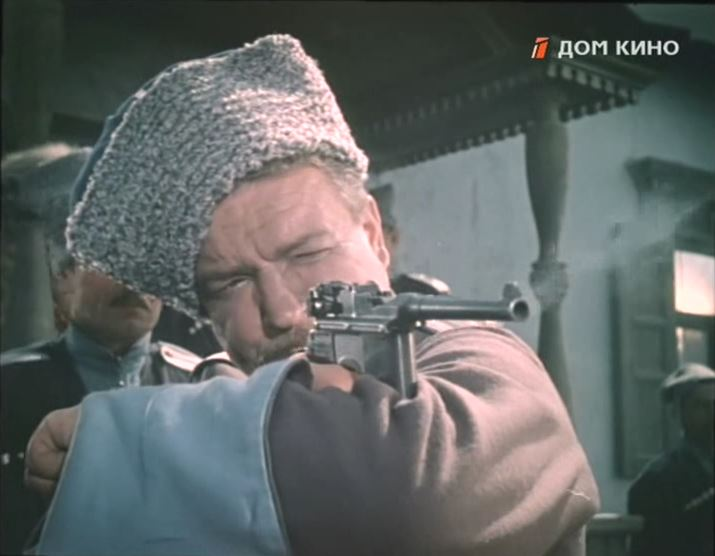
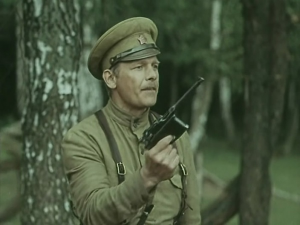

Отражение в кинематографе
Пистолеты «маузер» встречаются во многих кинофильмах.
«Маузер» - пистолет, породивший культ. Он стал неотъемлемой частью образа красных комиссаров в кожаных куртках, символом непререкаемой власти. Его хранили, им награждали, о нем мечтали, его боялись.
В СССР одним из первых фильмов с участием пистолета Маузер К96 является «Человек с ружьем» (1938). В дальнейшем, они появлялись в других фильмах про революцию и гражданскую войну («Белое солнце пустыни», «Офицеры», «Неуловимые мстители»), также на этом оружии строится сюжет фильма «Меченые». Практически во всех советских фильмах снималась модификация образца 1920 года, нередко хронологически не соответствовавшая событиям на экране.
В дальнейшем, пистолеты появлялись в некоторых кинофильмах российского производства («Волчья кровь», «Соловей-разбойник»…).
Пистолеты встречаются также в зарубежных кинолентах, так например, в фильме Шерлок Холмс: Игра теней главный герой использует Маузер К96, хотя действие происходит в 1891 году.
Пистолетом пользуется сэр Малкольм Мюррей, персонаж сериала «Страшные сказки».